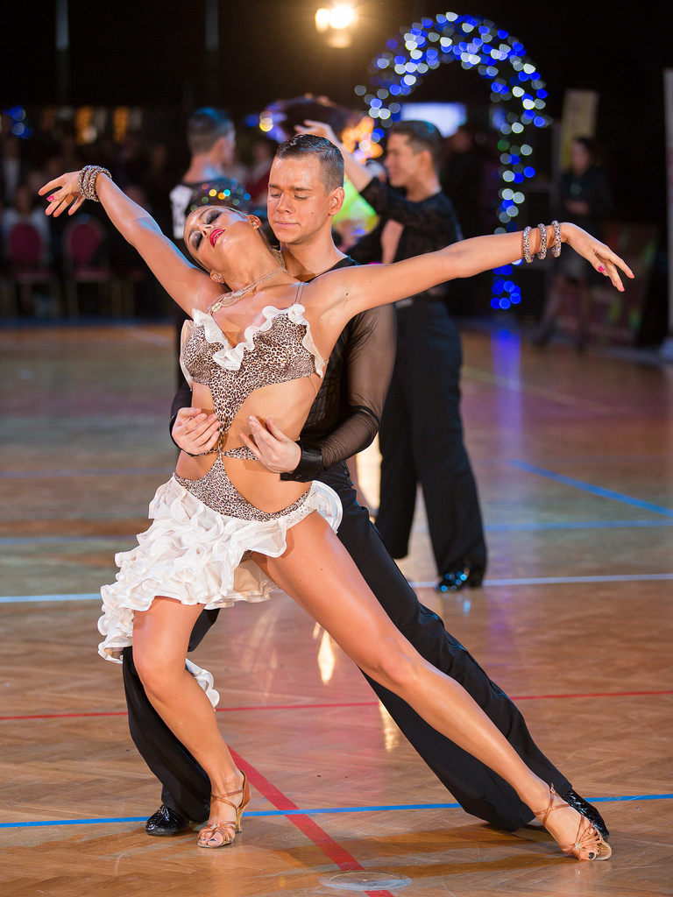

Elizaveta Sheshko
March 19, 2019 14:59
Pумба среди всех бальных танцев характеризуется наиболее глубоким эмоциональным содержанием. Также, в ходе своего усовершенствования, этот танец приобрел многие черты, свойственные блюзу. Неповторимый эстетический эффект танца создает ярко выраженный эмоциональный характер и довольно драматическое содержание музыки. Румба, по праву, занимает место одного из самых ярких танцев любви.